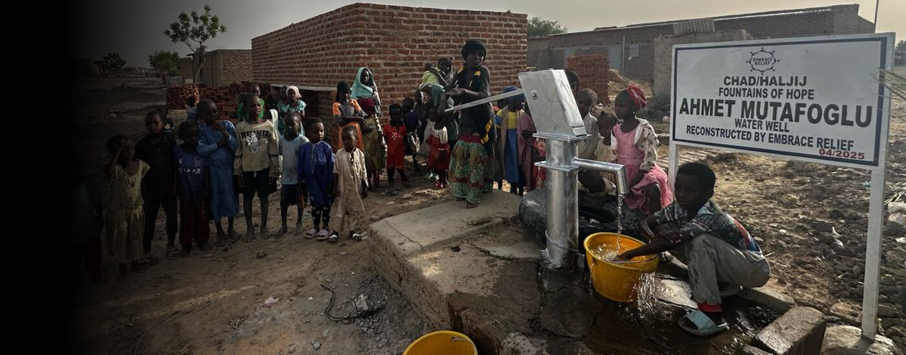

Embrace Relief
Courtesy of Embrace Relief
Across sub-Saharan Africa, over 50,000 water supply points are broken or abandoned, leaving millions of people without access to safe, reliable water. But it doesn’t have to stay that way.
Embrace Relief is on a mission to restore these vital water sources through their Fountains of Hope initiative. Since 2013, Embrace Relief has provided clean, safe water to over 1,000,000 people, transforming lives in communities that once struggled daily for this basic necessity. Building on that success, Figeographie partnered with the Fountains of Hope initiative in 2025 to repair identified non-functional wells in Africa, restoring water access where it was lost.
Why Restoring a Well Matters
Courtesy of Embrace Relief
Restoring a damaged well is cost-effective and powerful. For just $1,500, you can bring an entire well back to life, delivering the same high-quality, long-lasting clean water as a brand new one. Every repair helps families thrive, improves sanitation, reduces the spread of waterborne illnesses, and unlocks opportunities for education, agriculture, and economic growth.
Figeographie's Goal
Our goal is to raise $6,000 to repair 4 wells in sub-Saharan Africa, restoring access to clean water for an entire community by February 2026.
Donate Today!
All donations go directly to Embrace Relief's Fountains of Hope initiative, which has a proven track record of successful well repairs and community impact.
💧 Donate Now